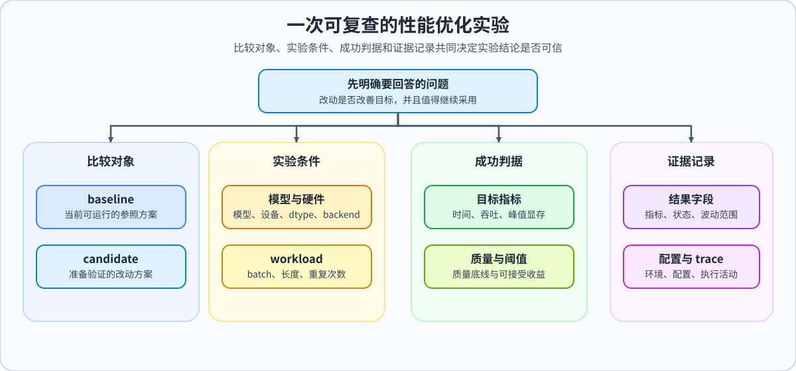

前置阅读
导语： 先完成 73、76、75 的训练侧测量、策略比较和预算决策，再用 profiling 把显存优化方案带入端到端 workload，判断改动是否值得最终保留。
相关阅读
导语： 完成优化闭环后，可以继续把瓶颈定位推进到更底层的实现手段，或回到并行/系统项目页验证是否值得迁移。
Step 1: 定义端到端优化目标
先回答一个问题：这次优化到底要解决什么瓶颈，成功标准是什么？
| 环节 |
本节内容 |
形成的证据 |
| 输入 |
73 的训练 baseline、76 的候选比较、75 的预算决策，以及 baseline / candidate 的 profiler trace |
说明当前结论来自哪组模型、workload 和硬件 |
| 操作 |
在相同 workload 下对照时间线，定位 forward、backward、重算、搬运或同步活动；一次只改一个变量 |
把“显存下降”或“变慢”连接到可观察的执行活动 |
| 输出 |
baseline / candidate 指标表、trace 路径、瓶颈类别、证据、下一步改动和决策 |
形成可复核的 accept / tune / reject 或证据缺口 |
| 边界 |
CPU 只检查报告合并和字段逻辑；只有 GPU trace 才能支持 CUDA 时间线、kernel 活动和搬运判断 |
CPU 结果不能替代 profiling 证据，局部指标也不能直接升级为端到端结论 |
- 主线固定模型、输入数据、batch size、seq len、硬件环境和运行后端，保证 trace 可比较；扩展 workload 必须另列为独立证据。
- 明确优化目标，例如降低 step time、提升 throughput、降低 peak memory 或减少通信等待，并先回到 Task 1 的账本判断问题属于容量、带宽、计算还是同步。
- 同时写清约束条件：训练任务要保留 loss / accuracy 约束，推理任务要保留精度、输出一致性或服务 SLA 约束。
- Baseline 需要能稳定复现，不能只跑一次；建议至少 warm-up 若干轮，再测多轮平均值。
- 这一步的目标是让后面的优化有判断标准，而不是只得到一组孤立数字。

<div align="center"><strong>指标变化先由 trace 提出假设，再用同一 workload 复测。</strong></div>
Step 2: 先确认 baseline 和 profiling 口径合法
profiling 优化必须先确认 baseline 可复现，再把“慢”拆成可解释的瓶颈类型，不能直接对着单次热点截图开刀。
- 推荐先记录总耗时、吞吐、峰值显存，再用 profiler 看热点算子和同步点；73 / 76 的表格告诉你“发生了什么”，trace 用来解释“为什么”。
- 训练场景优先拆成：数据加载、forward、backward、optimizer step、显存峰值和多卡通信，并特别观察 19 的 checkpoint 重算、42 的 CPU-GPU 搬运是否出现在时间线上。
- 推理场景优先拆成：prefill、decode、KV cache、采样逻辑、数据搬运和 kernel 开销；如果使用 71 的 DeepSeek-V2-Lite / MLA workload，还要单独观察 latent KV 读写、位置相关分量和对应 kernel。
- 不要只找“最慢的一行代码”，而要判断瓶颈属于哪一类资源：计算、显存容量、内存带宽、通信还是调度；一个算子占比高不等于它就是可优化的根因。
- 这一步的产物应该是一句话瓶颈结论，例如：
当前瓶颈主要来自 decode 阶段 KV cache 读取。
Step 3: 用统一口径比较收益与代价
profiling 项目必须同时看 step time、throughput、peak memory 和任务约束，不能只挑单项热点收益下结论。
- 一次只改一个方向，例如调整 batch size、开启混合精度、替换 kernel、减少同步点或改变 cache 策略；改动必须能回应 trace 中的具体证据。
- 改完后重新测同样的指标，比较 baseline / tuned 的差异。
- 如果改动影响训练 loss、推理输出、显存峰值或系统稳定性，要把代价写清楚。
- 如果某个改动只是在一项指标上变好，却让另一项变差，要把取舍写清楚。
- 这一轮修改的目标是建立因果关系，而不是一次性把所有优化开关都打开。
Roofline：把 profiler 指标解释成瓶颈假设
Roofline 用算术强度把计算能力和内存带宽放到同一张图上：arithmetic_intensity = FLOPs / memory_bytes，可达到的性能上限近似为 min(peak_FLOPs, bandwidth × arithmetic_intensity)。算术强度较低时，带宽上限更可能先到达；算术强度较高时，计算上限更可能成为约束。它用于提出和检查瓶颈假设，不会替代端到端时间线。
| 输入 |
CPU 可验证的结果 |
只有 GPU profiler 才能确认的内容 |
| FLOPs、访存字节数、峰值算力、显存带宽 |
算术强度、计算/带宽上限和理论 bound |
kernel 的实际 FLOPs/s、实际带宽和硬件受限原因 |
| 缺少 FLOPs 或字节计数 |
输出 insufficient_evidence，不做 bound 判断 |
需要 Nsight Compute 或可靠的硬件计数器导出 |
因此，CPU 实验只检查公式和分类逻辑；GPU trace 如果没有 FLOP/DRAM counter，也只能记录 roofline_status=not_collected，不能把某个 kernel 直接写成 compute-bound 或 memory-bound。
Step 4: 输出端到端优化结论
端到端优化最终不是输出“某个热点是不是降了”，而是输出这次改动在当前任务约束下是否值得继续保留、微调或回退。
- 输出 baseline / tuned 对比表，至少包含 step time、throughput、peak memory 和备注。
- 附上 profiling 截图或关键统计，说明瓶颈来自哪一类资源。
- 写清楚本次改动、收益、代价和是否满足约束。
- 如果优化没有达到目标，记录失败原因和下一轮优先级。
- 将端到端结果与 75 的预算决策对照；如果 profiling 推翻了局部结论，要记录是 workload、同步、数据搬运还是系统开销造成的。
- 最终产物应回答：原始瓶颈是什么，做了什么改动，收益有多大，这个改动是否值得保留。
Step 5: 最小代码模板
上面的 Step 1-4 是完整 profiling 驱动优化流程。下面的代码实现其中最小、可复用的四块：测平均耗时、汇总 baseline / tuned 指标差异、生成优化报告，以及把结果收成 accept / tune / reject 的轻量决策。真实项目中的 profiling 截图、瓶颈证据和优化策略，需要基于这四步继续补充。
Step 6: 按统一协议保存项目结果
74 与 73、76、75 共用实验外层字段：模型、设备、dtype、workload、baseline / tuned、step time、throughput、peak memory、质量约束和 accept / tune / reject。74 额外保存 profiling 证据，因此不能只复制显存策略表。
建议额外记录：profile.tool、profile.top_operators、profile.compute_ratio、profile.memory_ratio、profile.communication_ratio，以及 bottleneck.category、bottleneck.evidence、bottleneck.optimization。trace.status=collected 只表示文件已生成，不等于瓶颈已经确认；只有把时间线观察、指标变化和一次针对性复验连起来，才能升级为端到端优化结论。如果当前环境没有真实 profiler，允许这些字段为空，但不能把未测量内容写成结论。
项目结果协议由 tools/profiling_result_schema.py 提供。它不会覆盖原始实验数据；真实 GPU 或 Colab 环境完成 profiling 后，可将结果保存为 benchmarks/results/74_profiling_optimization.json。
提示
- 先固定 baseline，再做 profiling，再改一个变量。
- 不要只看 step time，至少同时记录 throughput 和 peak memory。
- 如果瓶颈不是单一算子，而是同步 / 调度 / cache，报告里要直接写出来。
- 真实 GPU 场景可调用答案区的
collect_torch_profile 保存短 trace；不要把未采集的 top operators 填成推测。
参数口径说明
profiling 实验必须固定 model、workload、batch、seq_len、warmup、iters、backend 和硬件；warmup 不计入正式测量，iters 决定均值稳定性。优化目标可以是 step time、throughput、peak memory 或通信等待，但一次只改一个方向，并同时保留质量/稳定性约束。
测试